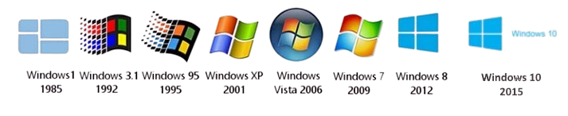

Início

Sobre o Windows
Windows é um sistema operacional de multitarefas para computadores e dispositivos móveis desenvolvido pela Microsoft. A palavra Windows significa literalmente “janelas”, na tradução do inglês para o português. Considerado um dos sistemas operacionais mais utilizados em todo o mundo, o Windows começou a ser projetado em 1981, mas foi apenas em 1993 que sua primeira versão foi lançada. Inicialmente, o Windows oferecia apenas uma interface gráfica, funcionando unicamente em programas em modo gráfico. Desde então, este sistema operacional tem evoluído, tanto em termos de funcionalidades, design e eficiência. Até o momento, o Microsoft já conta com dezenas de atualizações, sendo as mais conhecidas: Windows 95, Windows 98, Windows 2000, Windows XP, Windows Vista e, mais recentemente, o Windows 11. Existem diversos produtos que compõem a “família” Microsoft Windows: Windows Live, Windows Media Center, Windows Media Player, entre outros. Estes softwares foram desenvolvidos exclusivamente para potencializar o desempenho dos sistemas operacionais produzidos pela Microsoft. A função do sistema operacional do Windows é facilitar o acesso do usuário ao computador. Para tanto, utiliza interfaces eficientes, atrativas e fáceis de utilizar, além de integrar softwares mais rápidos e eficazes.
Versões do Windows
Windows 1.0 (1982-1985)
Windows 2.0 e 2.11 (1987 – 1990)
Windows 3.0 e Windows NT (1990 – 1994)
Windows 95 (1995 – 1997)
Windows 98, Windows Me e Windows 2000 (1998 – 2000)
Windows XP (2001 – 2005)
Windows Vista (2006 – 2008)
Windows 7 (2009 – 2012)
Windows 8 e 8.1 (2012 - 2014)
Windows 10 (2015)
Windows 11 (2021)
Futuro do Windows
O futuro do Windows está repleto de inovações e melhorias em várias áreas. Um dos focos principais será a integração com a nuvem, com um aumento na conectividade entre o sistema operacional e serviços como Microsoft 365 e OneDrive, permitindo acesso a arquivos e aplicativos de qualquer lugar. A segurança continuará sendo uma prioridade, com a implementação de novas funcionalidades, como autenticação multifator e o uso de inteligência artificial para detectar ameaças, protegendo os usuários contra malware e ataques cibernéticos.